A few weeks ago I realised that I was nudging closer and closer to a milestone on Tableau Public – my 150th published visualisation. I wanted to celebrate this achievement with a viz that could act as a review of the other 149 vizzes. This idea was inspired by Rob Taylor who recently published his 50th viz, and I’m sure I have seen others that have done the same.
There was one stipulation that I wanted to make for this visualisation – it had to be fun. When I first started using Tableau I loved the idea of it being just a blank canvas that you can use to create anything. I’ve also always been a fan of geometric repeating patterns and have always wanted to find a way to combine the two. The result was a viz that is not built with accessibility (or even analysis) in mind. But it looks amazing (I think), and I had a lot of fun creating it. In my head, that’s a big win!
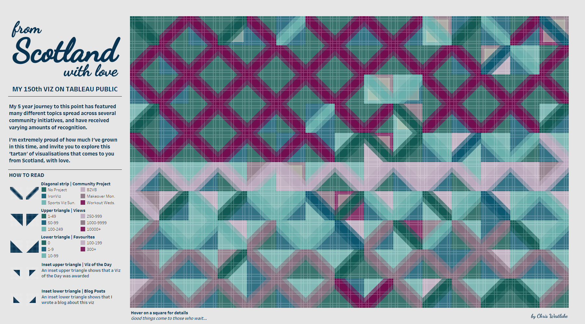
I went through 4 main steps to get to the finished visualisation which I want to share with you in this blog post. The first was scraping the data from the Tableau Public using Alteryx and the Tableau Public API. The next was designing the pattern and shapes, which I did in Figma. The third step was using map layers to create the tartan-like view. And finally, I added thumbnails of each visualisation to the tooltips of the visualisation.
Let’s get into it!
Scraping the Data
I got a lot of assistance on this step from Will Sutton’s GitHub repository. Here Will has compiled a list of known API calls that can be conducted on the Tableau Public site, together with examples of where they have been used.
There are 3 API calls that I have used in my Alteryx workflow, and I want to briefly talk through each of them here.
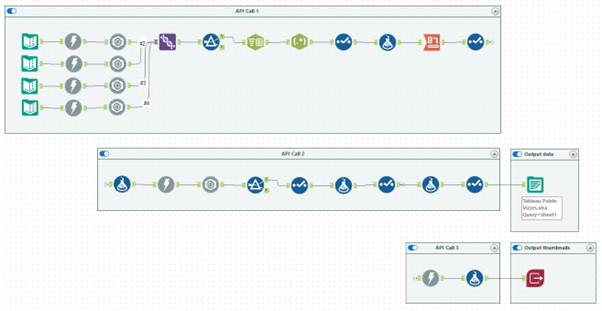
The first takes high level details of each workbook. It can only handle up to 50 workbooks so I have duplicated it with different start index specified each time to get details of all 150 workbooks on my profile. For this to work for your profile, simply replace westlake.cjw in the below address with your Tableau Public username.
https://public.tableau.com/public/apis/workbooks?profileName=westlake.cjw&start=0&count=50&visibility=NON_HIDDEN
After some cleaning of the resulting JSON, we can see the information that we are interested in. In addition to the viz number, we have the dashboard title (title), the name of the sheet being displayed (defaultViewName), the end part of the URL (workbookRepoURL), and the number of favourites and views.
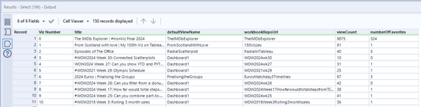
There is one key bit of information missing from this data – the date that each dashboard was published. To find this, we want to query each individual workbook on Tableau Public using the below API call.
"https://public.tableau.com/profile/api/single_workbook/"+[workbookRepoUrl]+"?"
This gives us a range of information for each workbook, some of it we had before but other parts are new. In this case, we only want to keep the firstPublishDate entry in the JSON, which we do with a simple filter step.
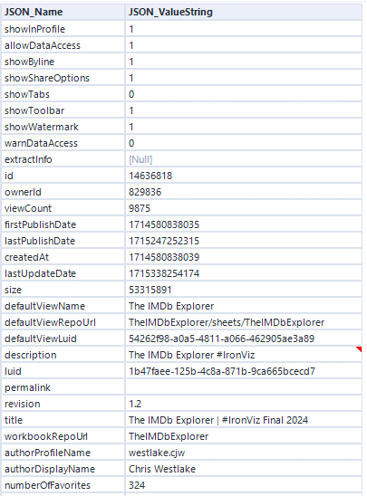
There is a slight complication here. The firstPublishDate (in this case 1714580838035) is almost as far from a date format as you can get! This is a common format for dates when dealing with JavaScript outputs. In many computer systems, January 1st 1970 00:00:00 is used as the reference data and called the Unix epoch. All of the date values we see refer to the number of milliseconds after that date. Doesn’t that seem sensible and obvious?! I used the below formula to calculate the date in a more usable format. This takes the value from the JSON and divides it by 86,400,000 which is the number of milliseconds in one day. We then add this number of days to the reference date of January 1st 1970.
DateTimeAdd('1970-01-01',[JSON_ValueString]/86400000,'days')
After some further cleaning, we have a dataset ready to export and pull into Tableau. Before loading this into Tableau I also added some additional fields to add details that aren’t available from the API. This was the project that the viz fell into, whether it was awarded a Viz of the Day, and whether I have written a blog based on the viz.
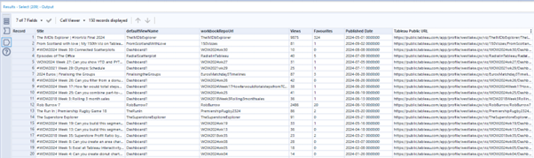
There is one other API call that I used which lets us batch download all the thumbnails from Tableau Public. We’ll cover the use of these in the fourth step of this blog, but this step of the workflow uses the below API call to store the images temporarily as a Blob. They are then exported via the Image Output tool in Alteryx’s Intelligence Suite directly into my shape repository for access in Tableau later.
"public.tableau.com/static/images/"+left([workbookRepoUrl],2)+"/"+[workbookRepoUrl]+"/"+[defaultViewName]+"/4_3.png"
Designing the Pattern and Shapes
I think that my favourite thing about geometric patterns is that the only limit is your creativity. You can always twist something a little more, or change the direction, or make something slightly bigger or smaller. The trial and error process is really important here, and I am so glad that I took the time to find a pattern that was just right for this visualisation. I started off looking at something more Bauhaus themed with block colours and some circles but it just wasn’t right for my style. The Scottish tartan idea came to me when looking at colour palettes for another project.
To build up the tartan, I used 9 shapes, all designed in Figma and exported as transparent png files that I loaded into Tableau through my shape repository.
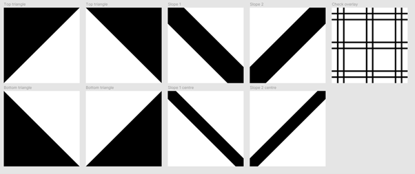
As I said above, the only limit here is your creativity. I had the idea for tessellating shapes like this after seeing this viz by Wendy Shijia. A lot of Neil Richards’ work is along a similar vein as well, and Nadieh Bremer has also done amazing things with patterns like this in data viz, especially her Patchwork Kingdoms project with UNICEF. The range of what is possible is amazing, and I (cautiously!) think we need more of it on Tableau Public.
Assembling the Viz
Now on to the really fun part - assembling your creation! There are very few calculations at play here, but plenty of map layers. The first step I did here was to establish the use of map layers. I created one central point using a MakePoint calculation and added it to the view.
MAKEPOINT(0,0)
I also set my 150 vizzes into a 15x10 grid that would fit nicely on my final dashboard. Normally when creating small multiples I wouldn’t decide on the exact grid until much later in the process, but here the layout is a really important factor. I set up the grid using the following calculations in Tableau.
Columns: (index()-1)%15
Rows: int((index()-1)/15)
Both of these need to be discrete pills. We also add Title to detail here, and compute our columns and rows table calculations along Title to create the grid. Switch off the map and turn the mark type to shape. The result should look like this:
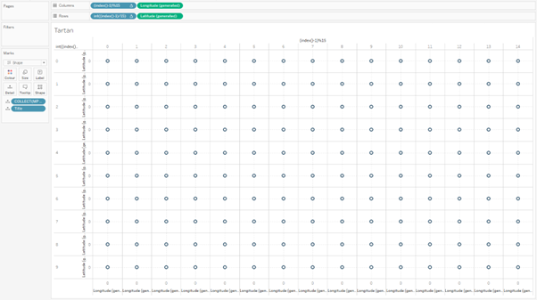
The first layer that we want to create is the diagonal strip in the middle of each square. The key thing with this is that it has to alternate so that we get the zigzag pattern that works so well. This requires another index calculation similar to the ones we used above. This time we want to split the vizzes between two values, not 15, so the calculation is:
(index()-1)%2
Make this discrete, calculate it using Title, add it to shape and pick the relevant shapes from the Figma creation. You’ll now see that there are two shapes alternating in the grid. These diagonals are coloured by project, so we can add project to colour and the first layer begins to take shape. Each time we add a dimension to the view we will also need to update the table calculations so that the grid keeps it’s structure.
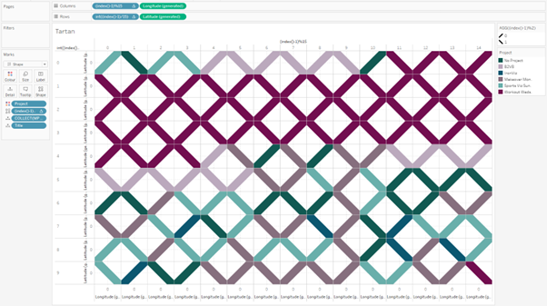
The rest of the visualisation follows similar steps for each additional layer. Below are images showing the addition of each layer. I’ve also used transparency (and a copy of the central band with a skinnier diagonal strip) to try and build depth and add texture to the visualisation.
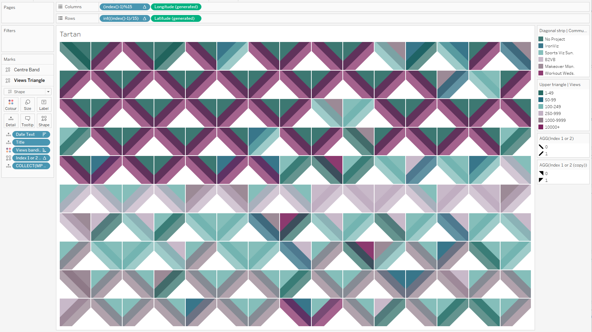
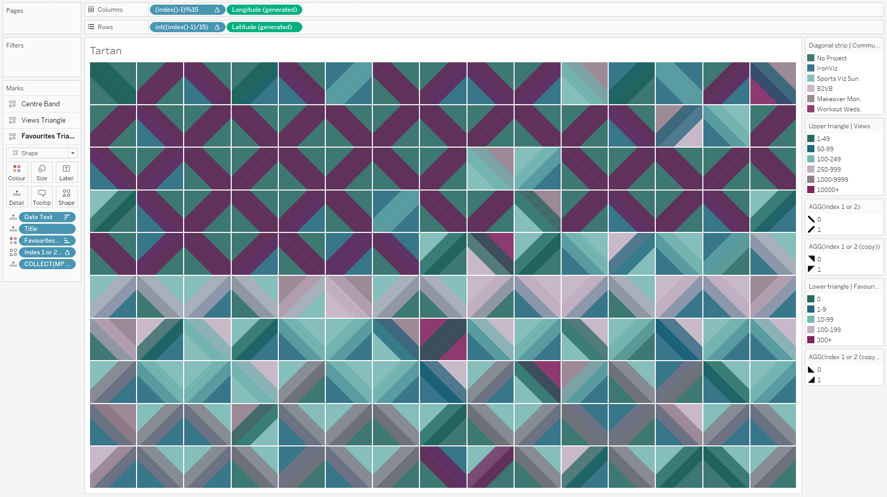
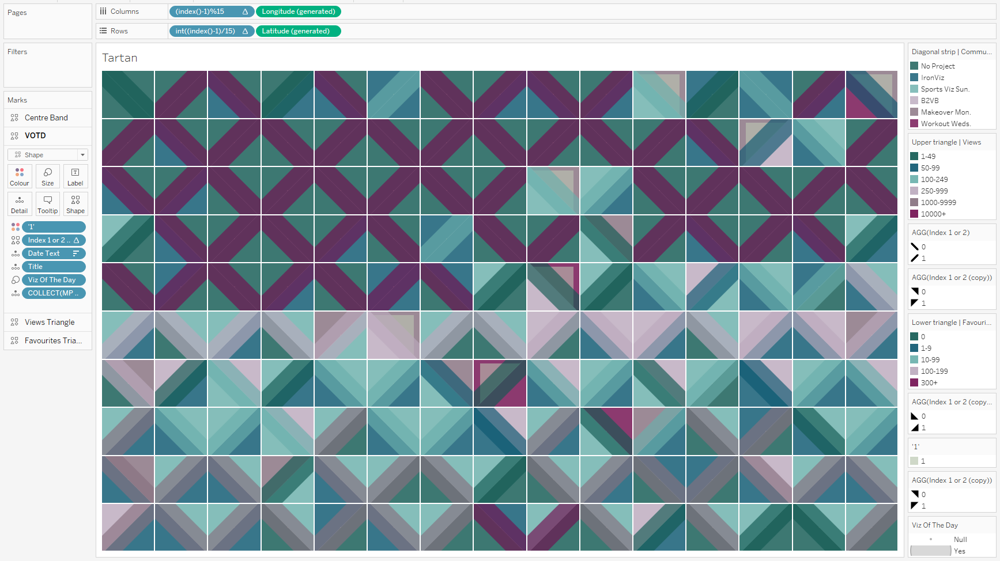
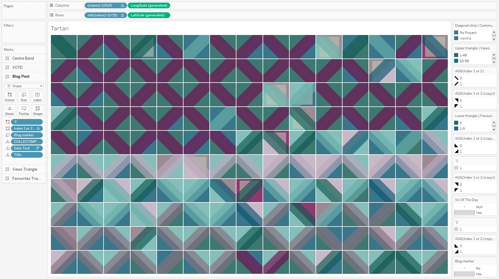
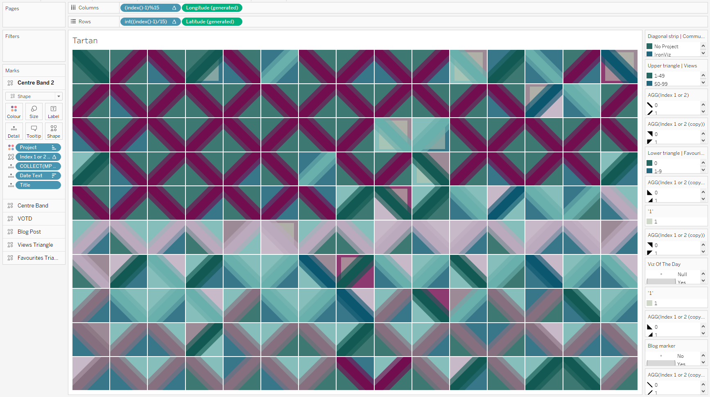
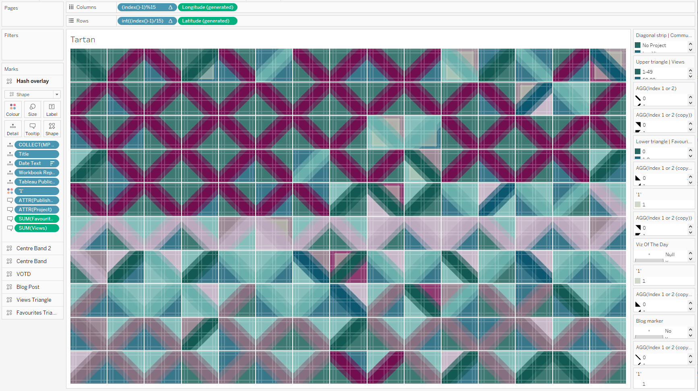
The final layer is the only interactive one and contains all of the tooltip information. This leads us nicely on to the use of the thumbnails from earlier.
Using the Thumbnails
I wanted to include images of my visualisations in this viz so that you knew what each of them were. I’m far more likely to remember a viz by its appearance rather than its title and number of views! I have included the thumbnails in a viz in tooltip by utilising the shapes that were extracted via the Tableau Public API earlier.
In a separate sheet I brought in all of the visualisations in the same order that the icons appeared in my shape repository and simply assigned the shape palette to them. This was not as simple as I thought it would be because of how Tableau orders shapes when it reads them into a workbook. Essentially it ignores the numbers in any names when sorting the shapes which can lead to some frustrating misalignment. For this reason, I would recommend naming your shapes something like AAA, AAB, AAC etc. and adding a column to your data with the corresponding code.
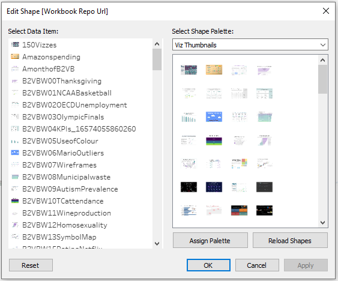
By adding the sheet to your tooltip and altering the height and width of the sheet in the tooltip, your tooltip can look like in the below image. I’ve used a width of 300 and a height of 225, but you can use whatever works best for you.
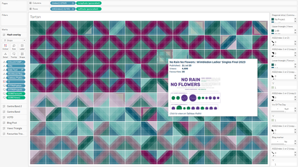
I also added interactivity here so that when you click on a square in the grid it opens that visualisation in a new window. I just wish that this interactivity was a little bit smoother on Tableau Public!
//
This is the most I have enjoyed a project in Tableau for quite a while. It’s light, it’s fun, it’s colourful. I know it doesn’t fit with normal accessibility rules, is far away from data viz best practice, and carries little to no analytical value. But none of that was the point. I wanted to create something in Tableau just for the sake of it and to celebrate what I have achieved over the last 6 years.
I would love to see what you do with these techniques so be sure to tag me in any vizzes that you do using tessellating patterns – especially if you can make them a little more accessible and analytical. I’m sure it can be done!
Take care // Chris